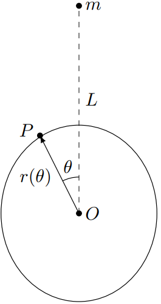
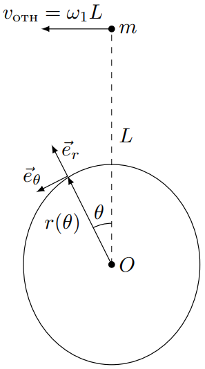
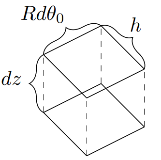

X23 (2023) — English translation
If an isolated spherical planet is covered with a thin layer of liquid, the shape of the liquid surface will tend to be spherical due to the principle of minimum potential energy. If there are other bodies near the planet, they will distort the shape of the surface of the liquid. This is due to tidal forces, which arise due to the fact that different parts of the liquid are attracted to this body with different forces. Such forces cause ebbs and flows on the surfaces of planets, which is why they got their name. The problem considers the following system. Two homogeneous spherical bodies (planets) with masses $m$ (small body) and $M$ (large body, $M>m$) move in circular orbits around a common center of mass. The distance between the centers of the bodies is $L$, the radius of the large body is $R$ ($L\gg{R}$), and the small body can be considered a point body. The surface of a large body is covered with a thin layer of liquid of density $\rho$, the surface shape of which is the object of study. You have to determine the shape of the surface of a large body during synchronous rotation, when the angular velocity of the orbital rotation of the bodies coincides with the angular velocity of rotation of the large body around its own axis. Next, you need to describe the dynamics of tidal capture, that is, the process of transition to synchronous rotation.
This part of the problem deals with synchronous rotation. A large body rotates around its axis with an angular velocity equal to the angular velocity of the orbital rotation of the bodies $\omega$.
Let us move to a non-inertial reference system associated with the center of the large body and rotating so that the center of the small body is stationary in it. Let us recall the expression for acceleration in a non-inertial reference system with a origin at point $O$, moving with acceleration $\vec{a}_0$, the coordinate axes of which rotate with angular velocity $\vec{\omega}$ and angular acceleration $\vec{\varepsilon}$: $$\vec{a}_\text{отн}=\vec{a}-\vec{a}_0+\omega^2\vec{r}_\perp-\big[\vec{\varepsilon}\times\vec{r}\big]-2\big[\vec{\omega}\times\vec{v}_\text{отн}\big]. $$ Здесь $\vec{a}$ – ускорение в инерциальной системе отсчёта, $\vec{r}_\perp$ – компонента радиус-вектора частицы, перпендикулярная оси вращения, а $\vec{v}_\text{rel}$ – скорость частицы относительно неинерциальной системы отсчёта. Во всех пунктах задачи ограничивайтесь только первыми тремя слагаемыми: $$\vec{a}_\text{отн}\approx{\vec{a}-\vec{a}_0+\omega^2\vec{r}_\perp}. $$ Задача является плоской, поэтому считайте, что $\vec{r}_\perp=\vec{r}$, unless otherwise stated.
Let us denote the center of the large body as $O$. Further, in all points of the problem, unless otherwise stated, the shape of the surface of a large body is studied in a section perpendicular to the angular velocity of orbital rotation, containing a small body and point $O$. Consider the point $P$ on the surface of a large body lying on a line passing through the point $O$ and forming an angle $\theta$ with the line connecting the smaller body to the point $O$. Let's denote the distance between points $O$ and $P$ as $r(\theta)$.
Let us denote the center of the large body as $O$. Further, in all points of the problem, unless otherwise stated, the shape of the surface of a large body is studied in a section perpendicular to the angular velocity of orbital rotation, containing a small body and point $O$. Consider the point $P$ on the surface of a large body lying on a line passing through the point $O$ and forming an angle $\theta$ with the line connecting the smaller body to the point $O$. Let's denote the distance between points $O$ and $P$ as $r(\theta)$.

Let us represent the shape of the surface in the form $r(\theta)=R+h(\theta)$, where $h(\theta)\ll{R}$ and $h(\pi/2)=0$.
Note: Use the following approximation: $$\cfrac{1}{\sqrt{1+a^2-2a\cos\theta}}\approx{1+a\cos\theta+\cfrac{a^2(3\cos^2\theta-1)}{2}} $$
We examined the behavior of the system in steady state. Next, we will study transient processes that lead to the equalization of angular velocities of orbital motion and rotation of a large body around its axis.
In this part of the problem, the angular velocity of rotation of the large body is $\Omega$ and is considered constant. Let's move to a non-inertial reference system associated with point $O$ and rotating with angular velocity $\Omega$. We will consider the same section of a large body as in part $\mathrm{A}$. Let us introduce the following notation for this part of the problem: $$\omega_1=\omega-\Omega $$ Для решения задачи нам понадобится компонента силы $F_\tau$, направленная вдоль вектора $\vec{e}_\theta$. Она определяется силами инерции и гравитационной силой малого тела, и зависит от угла $\theta$ и от времени $t$. Будем отсчитывать время $t$ from the moment shown in the figure.
In this part of the problem, the angular velocity of rotation of the large body is $\Omega$ and is considered constant. Let's move to a non-inertial reference system associated with point $O$ and rotating with angular velocity $\Omega$. We will consider the same section of a large body as in part $\mathrm{A}$. Let us introduce the following notation for this part of the problem: $$\omega_1=\omega-\Omega $$ Для решения задачи нам понадобится компонента силы $F_\tau$, направленная вдоль вектора $\vec{e}_\theta$. Она определяется силами инерции и гравитационной силой малого тела, и зависит от угла $\theta$ и от времени $t$. Будем отсчитывать время $t$ from the moment shown in the figure.

Note: Use the results obtained when solving item $\mathrm{A4}$.
From the law of change in angular momentum for an element of a liquid surface, it can be obtained that its equation of motion is equivalent to the equation of forced oscillations: $$\Delta{m} R^2 \left(\ddot{\theta}+2\gamma\dot{\theta}+\omega^2_0(\theta-\theta_0)\right)=F_\tau(t{,}\,\theta)R, $$ где $\gamma$ и $\omega_0$ – постоянные величины, $\theta_0$ – положение элемента жидкости в равновесии. Считайте, что $\omega_0\gg{\sqrt{Gm/L^3}}$. Во всех пунктах считайте, что $\theta - \theta_0 \ll 1$, поэтому справедливо приближение $F(t,\,\theta) \approx F(t,\, \theta_0)$.
Further, for convenience, we will use the angle $\varphi_1 = 2 \theta_0 + \varphi_0$ and write the expression for $\theta(t)$ in the following form: $$\theta(t{,}\theta_0)=\theta_0+A\sin(2\omega_1t-\varphi_1) $$
To determine the dependence $h(t{,}\theta)$, we present it in the following form: $$h(t{,}\,\theta)=h_0+h'(t{,}\,\theta)\qquad h'(t{,}\,\theta)\ll{h_0} $$ Рассмотрим прямоугольный параллелепипед со сторонами $h$, $Rd\theta_0$ и $dz$, соответствующий углу $\theta_0$, где $dz$, $\thet a_0$ и $d\theta_0$ - постоянные величины. Объём воды в этом параллелепипеде равен: $$dV=hRd\theta_0 dz. $$ Этот объем меняется, поскольку жидкость втекает и вытекает через грани $hdz$ параллелепипеда с разными скоростями, что приводит к изменению высоты $h$. Считайте, что через грани $hRd\theta_0$ liquid does not flow. The liquid is incompressible.
To determine the dependence $h(t{,}\theta)$, we present it in the following form: $$h(t{,}\,\theta)=h_0+h'(t{,}\,\theta)\qquad h'(t{,}\,\theta)\ll{h_0} $$ Рассмотрим прямоугольный параллелепипед со сторонами $h$, $Rd\theta_0$ и $dz$, соответствующий углу $\theta_0$, где $dz$, $\thet a_0$ и $d\theta_0$ - постоянные величины. Объём воды в этом параллелепипеде равен: $$dV=hRd\theta_0 dz. $$ Этот объем меняется, поскольку жидкость втекает и вытекает через грани $hdz$ параллелепипеда с разными скоростями, что приводит к изменению высоты $h$. Считайте, что через грани $hRd\theta_0$ liquid does not flow. The liquid is incompressible.

To find the moment of forces acting on a large body, you will need to consider an arbitrary section of the larger body. We will measure the angle $\beta$ from the axis of rotation of the larger body. Then the cross-sectional radius of the larger body in the perpendicular plane is equal to $r=R\sin\beta$. Consider that to describe the dependence of $\theta(t{,}\,\theta_0{,}\,\beta)$ and $h'(t{,}\,\theta_0{,}\,\beta)$ it is sufficient to replace the radius $R$ with the distance to the axis of rotation $R\sin\beta$ everywhere.
Tidal locking is the equalization of the angular velocities of orbital rotation and rotation around its own axis. In this part of the problem, you will determine the parameters $\omega_0$ and $\gamma$ for the model discussed in Part B, and also estimate the time during which tidal locking occurs in the Earth-Moon system.
Consider the following information known:
Earth mass $M = 5{,}97 \cdot 10^{24}~\text{kg}$; Moon mass $m = 7{,}36 \cdot 10^{22}~\text{kg}$; radius of the Earth $R = 6{,}38 \cdot 10^6~\text{м}$; water density $\rho = 1{,}00 \cdot 10^3~\text{kg}/\text{м}^3$; gravitational constant $G =6{,}67 \cdot 10^{-11}~ \text{Н} \cdot \text{м}^2/\text{kg}^2 $; now the distance between the Earth and the Moon is $L_0 = 3{,}84\cdot 10^8~\text{м}$; Now the Earth rotates around its own axis with an angular velocity of $\Omega_0 = 7{,}27 \cdot 10^{-5}~\text{с}^{-1}$.
Note: with synchronous rotation, the angular momentum of the Earth associated with rotation around its axis can be neglected.
To describe the transient process, numerical values of the parameters $\omega_0$ and $\gamma$ are required. To determine them, consider the following known:
Now the tide position lags behind the Moon by an angle $\beta=3^\circ$ in the direction of its rotation relative to the Earth. Lag means that $\omega_0>2|\omega_1|$; now the difference between high and low tide heights is $0{,}24~\text{м}$; The average depth of the world's oceans is $h_0=3{,}74~\text{км}$.
Tidal capture in the Earth-Moon system can be divided into two stages: a relatively rapid transition to orbital rotation with an angular velocity of $\omega_{\text{синх}}$, at which the distance from the Earth to the Moon practically coincides with the steady state $L = L_{\text{синх}}$; a long process of equalizing the angular velocities of orbital rotation and the rotation of the Earth around its axis. The characteristic time of the second process $\tau_2$ can be considered the time of the transition process to tidal capture.
Tidal locking in the Earth-Moon system can be divided into two stages:
Source: https://pho.rs/p/3134